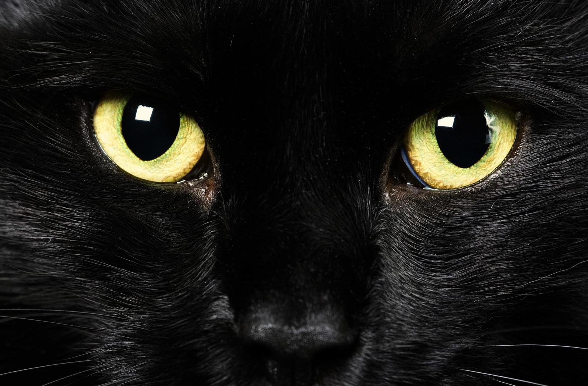

Por que dizem que gato preto dá azar?
Segundo a lenda, havia um feiticeiro que era amante da mulher de um cliente. Numa noite, ele resolveu matar essa mulher. Mas, um belo dia o feiticeiro e o assassino apareceram mortos, sendo que o assassino foi morto com um arranhão de gato no pescoço e que na cena do crime estaria um gato. Então, um rapaz acha esse gato e conta pra sua mãe que o gato tinha conversado com ele, e o garoto convence sua mãe de ficarem com o bichano.
Só que depois disso começam a acontecer várias coisas. A mãe do garoto leva um dia um homem pra casa e o gato não gosta nada dele, arranhando-o e mordendo-o no pescoço. A vítima desmaia e a mãe do menino pega um crucifixo pra tentar exorcizar o feiticeiro pra fora do gato.
A lenda conta que a alma do feiticeiro saiu do gato e ficou vagando até encontrar um outro gato para se hospedar.
Essa é uma das histórias, mas tem algumas outras versões pra explicar a crença de que gato preto dá azar.
Na Idade Média os gatos pretos eram considerados bruxas transformadas em animais. Isso gerou a crença de que cruzar com um gato preto na rua traz má sorte. Desde então, o gato preto ficou associado à bruxaria, às trevas, à magia negra e ao diabo.
Outra curiosidade: no século XV, o Papa Inocêncio VII colocou os gatos em uma lista de seres hereges pela Inquisição. Os gatos eram relacionados aos maus espíritos.
Gato preto dá sorte
Na contramão de tanta crença de que gato preto dá azar, também há uma crença de que gato preto traga sorte. O Rei Charles I, da Inglaterra, tinha um gato preto e acreditava verdadeiramente que sua sorte estava ligada ao gato. Ele colocou inclusive guardas vigiando seu gato de dia e de noite para que nada acontecesse com o animal. Porém, o gato acabou morrendo e logo depois disso, o Rei Charles foi preso e executado.
Vantagens do gato preto

- São lindos e charmosos;
- São enigmáticos;
- Tem muita personalidade e mais ainda o seu dono;
- São carinhosos e brincalhões como os outros gatos;
- Os pelos são curtos e fáceis de cuidar.